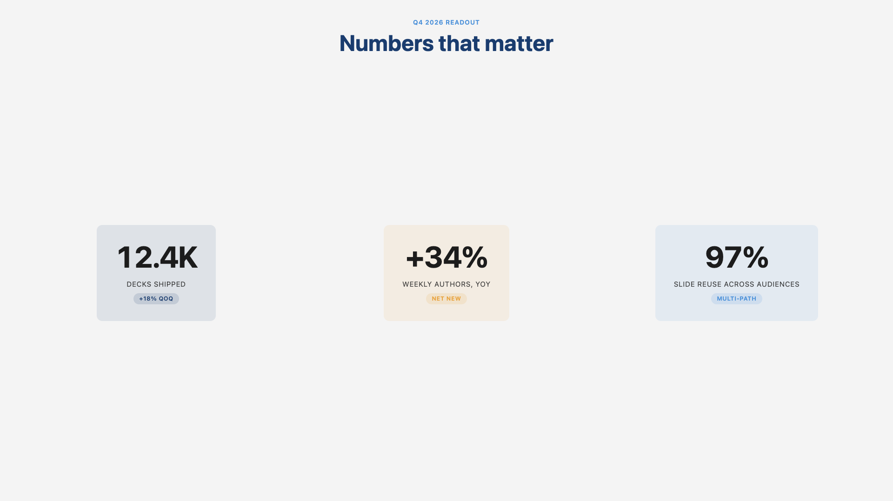
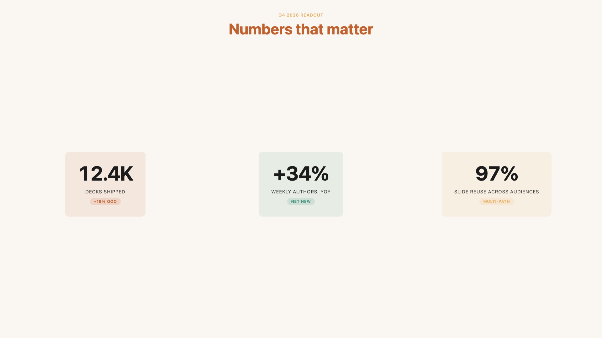
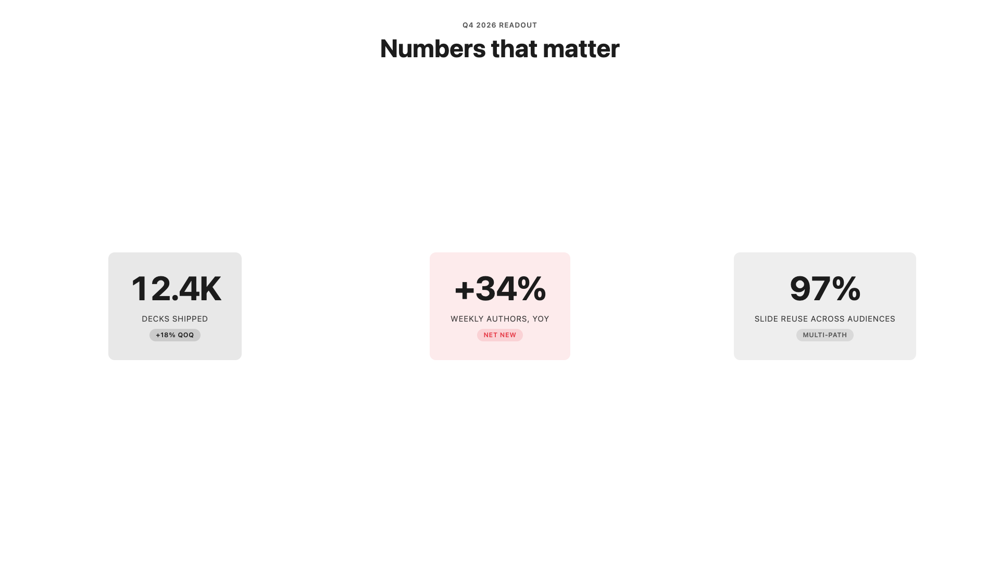
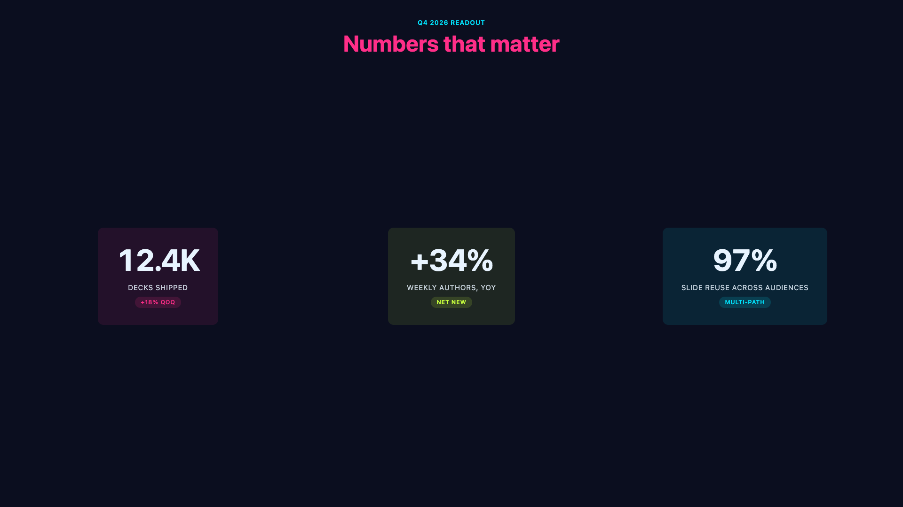
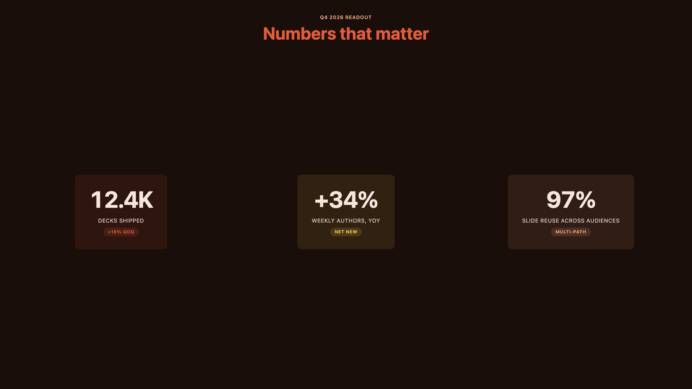
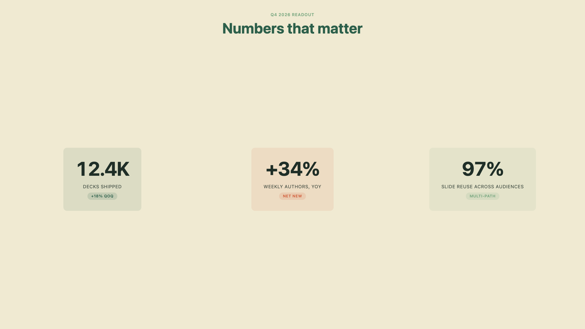
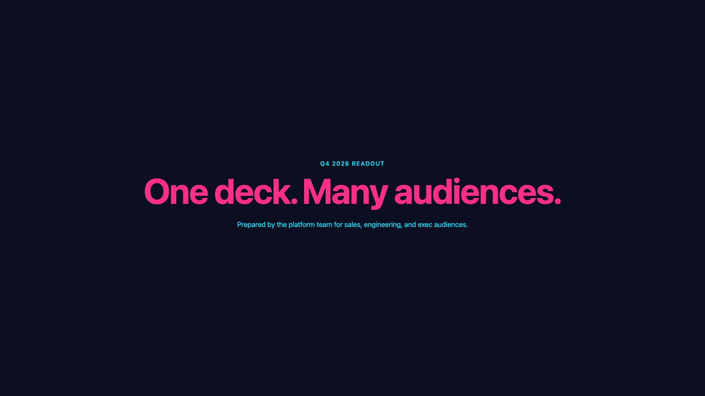
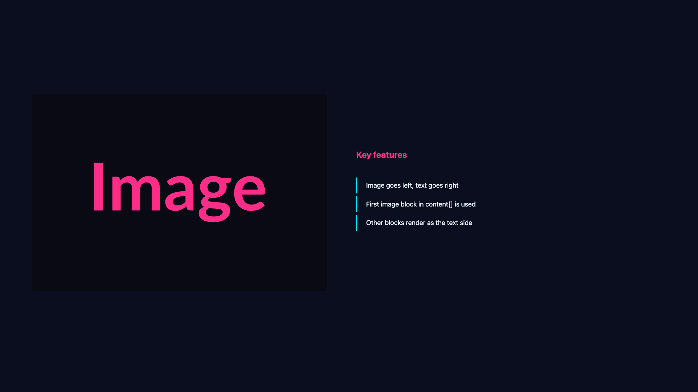
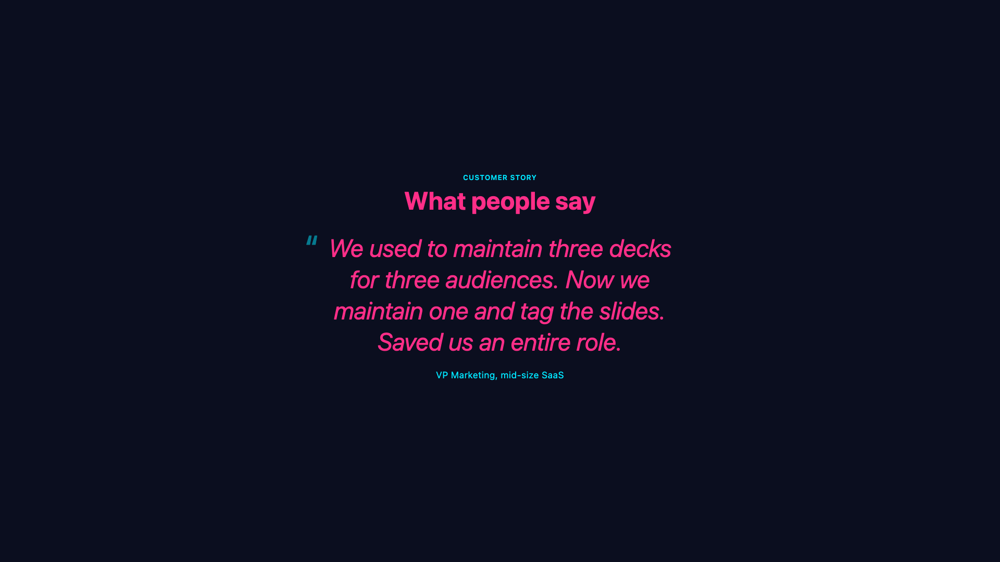

One deck.
Many audiences.
Build a single presentation, then ship a tailored version to sales, engineers, or executives. No copy-paste. No three decks to keep in sync.
Watch · 60 seconds
Verso in motion.
A quick tour of the editor, paths, and exports.
Try it · the big idea
Tag a slide, see who gets it.
This is exactly how it works inside Verso. Click the colored chips below to add or remove a slide from each audience. Then click an audience pill at the top to preview their deck. The colored line shows you what they'll actually see.
deck.json · 6 slides · 3 audiences
All paths sees
6
of 6 slides.
In the real Verso editor this is a drag-and-drop timeline. Same idea, more knobs.
What you get
A presentation tool that respects your time.
●
One file, every audience
Tag a slide for "sales" or "engineering" and Verso ships them a deck with only their slides. Change a fact once, every audience gets it.
▦
17 ready-made layouts
Cover, agenda, two-column, big-number, quote, timeline. Pick a layout, drop in your text, you're done. No fiddling with text boxes.
✦
Six themes built in
Slate, warm, mono, neon, mars, forest. Switch with one click. Every layout updates colors automatically. Your own theme is one small file.
▶
Speaker mode included
Notes pane, next-slide preview, stopwatch. Click and drag to paint a fading laser-pointer trail. Works offline, no plugins.
⤓
Export anywhere
Save to PDF for print, a single self-contained HTML file for sharing, or PNG for embedding. Pixel-identical to what you see on screen.
⌨
Visual editor
Drag, drop, click. The editor is a friendly UI. Behind the scenes it writes plain files you can keep in any drive, share, or back up.
Themes
Same slide. Six factory looks.
Pick the mood that fits the room. Switch any time, no slide-by-slide cleanup.





In the wild
What a finished slide looks like.



Ready when you are.
Free, open source, runs on your laptop. No accounts, no cloud lock-in.